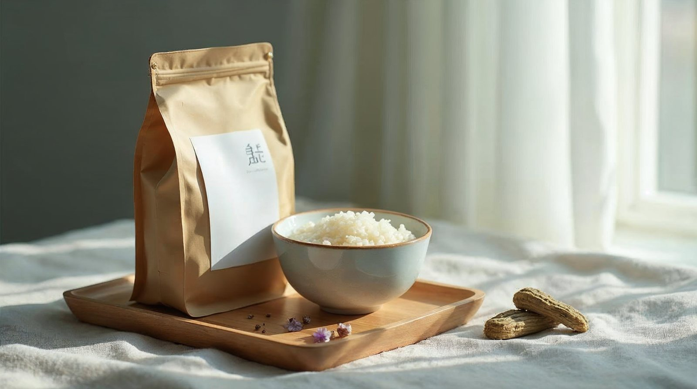
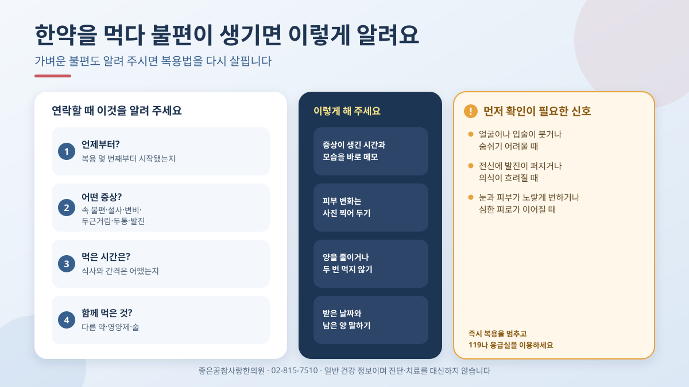

이종호 한의사 감수좋은꿈참사랑한의원 대표원장 (한의사 면허번호 19769)발행 2026-11-23 · 수정 2026-11-26
이 글의 차례
- 왜 이런 불편이 생길 수 있나요
- 복용 중 자주 말씀하시는 변화는 어떤 것인가요?
- 한약 때문인지, 다른 이유인지 어떻게 구분하나요?
- 왜 가벼운 불편도 바로 알려 달라고 할까요
- 피부 변화는 이렇게 찍어 두세요
- 연락을 주시면 이렇게 이어집니다
- 다시 드시기 시작할 때는요?
- 자주 하는 오해
- 예를 들면 이런 경우입니다
- 왜 복용을 멈추고 나서 연락하라고 하나요
- 연락이 늦어졌다면요?
- 먼저 이렇게 여쭙니다
- 일상에서 먼저 해 볼 수 있는 것
- 한의원에서 함께 살필 수 있는 경우
- 연락하실 때는 이렇게 말씀해 주세요
- 처음 며칠은 이렇게 살펴보세요
- 복용 시간을 바꾸면 편해지는 경우
- 가족이 대신 연락해도 되나요?
- 스스로 점검해 보세요
- 다른 병원 진료를 함께 받고 있다면요?
- 왜 불편을 알려 주시면 처방이 더 맞춰질까요
- 이렇게 기록해 오시면 상담이 쉬워집니다
- 연락 전에 메모 한 줄이면 충분합니다
- 이런 증상은 먼저 확인이 필요합니다
- 관련 글
한약을 먹다가 속이 불편하거나 피부에 이상이 생기면, 양을 임의로 줄이거나 늘리지 말고 일단 복용을 멈춘 뒤 언제부터 어떤 증상이 있는지 적어 한의원에 바로 알려 주세요. 가벼운 불편이라도 알려 주시면 복용 시간이나 처방을 다시 살필 수 있습니다.
왜 이런 불편이 생길 수 있나요
- 빈속에 먹거나 식사와 간격이 맞지 않으면 속이 불편할 수 있습니다.
- 함께 먹는 다른 약이나 영양제, 음주가 겹치면 몸의 반응이 달라질 수 있습니다.
- 사람마다 특정 약재에 대한 반응이 다를 수 있습니다.
- 그날의 컨디션이나 다른 원인(감기, 음식)과 우연히 겹친 경우도 있어 기록이 중요합니다.
복용 중 자주 말씀하시는 변화는 어떤 것인가요?
한약을 드시는 동안 생길 수 있는 변화는 대개 소화, 대변, 잠, 피부 쪽에서 먼저 나타납니다. 아래는 진료실에서 자주 듣는 이야기들입니다. 이 중 하나라도 있으면 가볍게 넘기지 말고 알려 주세요.
- 속: 더부룩함, 속쓰림, 메스꺼움, 입맛 변화
- 대변: 묽어짐, 횟수 증가, 반대로 변비
- 잠: 잠들기 어려움, 자주 깸, 낮에 졸림
- 몸: 두근거림, 열이 오르는 느낌, 두통
- 피부: 가려움, 작게 돋는 붉은 반점
같은 변화라도 언제 드셨는지, 그날 무엇을 먹었는지에 따라 의미가 달라집니다. 그래서 증상과 함께 생활의 앞뒤 사정을 같이 여쭙습니다.
한약 때문인지, 다른 이유인지 어떻게 구분하나요?
솔직히 말씀드리면 집에서 혼자 구분하기는 어렵습니다. 같은 시기에 감기에 걸렸거나, 기름진 음식을 먹었거나, 잠을 설친 날과 겹치면 무엇 때문인지 헷갈리기 마련입니다.
그래서 저는 시간 순서를 가장 중요하게 봅니다. 복용을 시작하고 며칠째에 나타났는지, 복용을 멈춘 뒤 어떻게 달라졌는지, 같은 시기에 바뀐 음식이나 약이 있었는지를 차례로 맞춰 봅니다. 기록이 자세할수록 원인을 좁히기 쉬워집니다.
왜 가벼운 불편도 바로 알려 달라고 할까요
작은 불편은 복용 시간을 식후로 옮기거나, 데워 드시거나, 다른 약과의 간격을 넓히는 것만으로 편해지는 경우가 많습니다. 그런데 참고 지내다 보면 복용을 아예 그만두시게 되고, 그동안 어떤 변화가 있었는지도 알 수 없게 됩니다.
말씀하시기 미안해서, 혹은 괜히 유난 떠는 것 같아서 망설이시는 분도 계십니다. 그런 걱정은 하지 않으셔도 됩니다. 불편을 알려 주시는 것은 처방을 몸에 맞추는 데 꼭 필요한 정보입니다.
피부 변화는 이렇게 찍어 두세요
- 밝은 곳에서, 그 부위가 잘 보이게 찍어 주세요.
- 크기를 알 수 있도록 동전이나 손가락을 옆에 두고 찍으면 좋습니다.
- 처음 발견했을 때와 몇 시간 뒤, 다음 날 같은 자리를 다시 찍어 변화를 남겨 주세요.
- 가려움이 있는지, 만지면 따가운지도 사진 옆에 한 줄 적어 두세요.
연락을 주시면 이렇게 이어집니다
전화를 주시면 먼저 어떤 증상이 언제부터 있었는지, 지금은 어떤지를 여쭙습니다. 증상이 가볍다면 복용 시간이나 방법을 바꿔 보시도록 안내하고, 며칠 지켜본 뒤 다시 연락을 부탁드리기도 합니다.
직접 뵙고 확인할 필요가 있다고 판단되면 내원을 권합니다. 맥과 혀를 다시 살피고, 처방을 그대로 이어 갈지, 약재를 바꿀지, 잠시 쉬어 갈지를 함께 정합니다. 다른 진료가 필요해 보이면 그 점도 말씀드립니다.
다시 드시기 시작할 때는요?
복용을 멈췄다가 다시 시작할 때는 혼자 판단하지 말고 먼저 여쭤 주세요. 시작하는 양이나 시간을 조정해 드릴 수 있습니다. 다시 드신 뒤에도 처음 며칠은 같은 방법으로 기록을 이어 가시면 됩니다.
자주 하는 오해
- 몸에 맞으려면 처음엔 불편한 게 당연하다고 여기기 쉽지만, 불편을 참고 넘기기보다 알려 주셔야 처방과 복용 방법을 다시 살필 수 있습니다.
- 불편하면 양을 반으로 줄여 계속 먹으면 된다고 생각하기 쉽지만, 임의로 양을 바꾸면 원인을 찾기 어려워집니다. 복용을 멈추고 먼저 연락해 안내를 받아 주세요.
- 한약은 자연에서 온 것이라 아무 반응이 없다고 여기기 쉽지만, 사람에 따라 속 불편이나 피부 변화 같은 반응이 생길 수 있습니다.
- 한약 때문인지 분명하지 않으면 말하지 않아도 된다고 생각하기 쉽지만, 원인이 애매할수록 기록과 함께 알려 주시는 것이 판단에 도움이 됩니다.
예를 들면 이런 경우입니다
- 예를 들어 아침을 거르고 출근길에 한약을 먹는 직장인이 속쓰림을 느낀다면, 먹는 시간을 식사 뒤로 옮기는 방법부터 함께 정합니다.
- 예를 들어 한약을 먹기 시작하고 사흘째 묽은 변이 이어지는 수험생이라면, 그 사이 먹은 음식과 카페인을 함께 여쭙고 내원해 진맥을 살핀 뒤 복용 방법을 조정합니다.
- 예를 들어 혈압약과 함께 한약을 드시는 어르신의 팔에 발진이 생겼다면, 사진과 약 봉투를 함께 확인하고 필요하면 피부과 진료도 안내합니다.
왜 복용을 멈추고 나서 연락하라고 하나요
불편이 생긴 상태에서 계속 드시면 증상이 한약 때문인지 알기 어려워지고, 불편이 커질 수도 있습니다. 반대로 양을 반으로 줄여 이어 드시면, 줄인 양에서 어떤 반응이 나는지 해석하기가 더 복잡해집니다.
일단 멈추고 연락해 주시면 멈춘 뒤 증상이 어떻게 달라지는지를 볼 수 있어 판단이 훨씬 쉬워집니다. 다른 병원에서 받은 약은 처방한 의사와 상의 없이 함께 끊지 마시고, 한약만 멈춘 상태로 알려 주세요.
연락이 늦어졌다면요?
며칠 참다가 연락하시는 분도 많습니다. 늦었다고 미안해하지 않으셔도 됩니다. 그동안 어떤 변화가 있었는지 기억나는 대로 알려 주시면, 거기서부터 이어서 살펴봅니다.
휴대전화 사진첩의 날짜나 메모 앱 기록을 보면 언제부터였는지 떠올리기 쉽습니다. 정확하지 않아도 "복용 사흘째쯤", "주말 무렵"처럼 대략적인 시점이면 충분합니다.
먼저 이렇게 여쭙니다
- 증상이 언제부터, 복용 몇 번째 때부터 시작되었나요?
- 어떤 증상인가요? 속 불편, 설사, 변비, 두근거림, 두통, 피부 발진 중 무엇인가요?
- 먹은 시간과 식사와의 관계는 어땠나요?
- 함께 먹은 약이나 건강기능식품, 술이 있었나요?

일상에서 먼저 해 볼 수 있는 것
- 증상이 생긴 시간과 모습을 휴대폰에 바로 적기
- 피부 변화가 있다면 사진 찍어 두기
- 양을 마음대로 줄이거나 두 번 먹지 말고, 복용을 멈춘 채 연락하기
- 연락할 때 한약을 받은 날짜와 남은 양 함께 말하기
한의원에서 함께 살필 수 있는 경우
- 속이 불편한 경우 복용 시간과 식사와의 간격을 함께 확인하고 조정합니다.
- 피부 변화가 있을 때는 시작 시점과 모습을 함께 확인합니다.
- 증상이 가벼워서 참고 있던 경우에도 알려 주시면 처방을 다시 살필 수 있습니다.
좋은꿈참사랑한의원에서는 연락을 받으면 증상과 복용 상황을 먼저 확인하고, 필요하다고 판단될 때 내원을 권해, 진맥으로 살피고 필요하면 설진을 더한 뒤 복용 방법이나 처방을 조정합니다. 다른 의료기관 진료가 필요하다고 판단되면 안내합니다.
처음 한약 상담을 받으실 때는 복용 중인 약과 영양제, 예전에 약이나 음식으로 불편했던 경험을 메모해 오시면 진료실에서 하나씩 확인합니다. 불편한 점과 함께 잠, 소화, 배변, 몸의 온기, 마음의 부담을 여쭙고 진맥을 짚습니다.
필요하다고 판단되면 혈액 검사기나 당화혈색소 검사기, 인바디 770 같은 장비로 확인을 더합니다. 한약을 받으실 때는 먹는 시간과 보관 방법, 불편이 생기면 연락하실 곳을 함께 안내해 드립니다.
연락하실 때는 이렇게 말씀해 주세요
- 이름과 한약을 받은 날짜, 지금까지 몇 번 드셨는지
- 어떤 불편이 언제부터 있었는지, 식사 전후 중 언제 드셨는지
- 함께 드신 약과 영양제, 술이나 평소와 다른 음식이 있었는지
- 피부 변화가 있다면 사진을 보여 드릴 수 있는지
전화는 02-815-7510이며, 평일 09:30~20:00(점심 13:00~14:00), 토·일·공휴일 09:30~15:00에 받습니다.
처음 며칠은 이렇게 살펴보세요
복용을 시작한 처음 며칠은 몸의 반응을 살피기 가장 좋은 시기입니다. 이 시기에는 술과 처음 먹어 보는 음식, 새 영양제를 함께 시작하지 않으시는 편이 반응을 구분하는 데 도움이 됩니다.
아침에 일어났을 때 속이 어떤지, 대변은 어땠는지, 밤에 잠은 잘 들었는지를 하루 한 줄씩만 적어 보세요. 아무 변화가 없었다면 "변화 없음"이라고 적어 두셔도 좋은 기록이 됩니다.
복용 시간을 바꾸면 편해지는 경우
빈속에 드신 뒤 속이 쓰리거나 메스꺼웠다면, 식후로 시간을 옮기는 것만으로 편해지는 경우가 많습니다. 차갑게 드신 뒤 배가 살살 아팠다면 데워 드시는 것으로 달라지기도 합니다.
다만 이런 조정도 혼자 판단하기보다 먼저 전화로 여쭤 주세요. 처방에 따라 시간을 지켜야 하는 경우가 있고, 증상을 들어 보면 시간 문제가 아닌 다른 이유가 보이기도 합니다.
가족이 대신 연락해도 되나요?
어르신이나 아이가 한약을 드시는 경우, 보호자께서 대신 연락하셔도 됩니다. 이때도 복용을 시작한 날, 증상이 생긴 시점, 함께 드시는 약을 알려 주시면 상황을 파악하기 쉽습니다.
스스로 점검해 보세요
- 한약을 빈속에 먹는 날이 많다
- 한약과 함께 먹는 양약이나 영양제가 있다
- 복용 기간 중 술을 마신 날이 있었다
- 예전에 약이나 음식으로 두드러기가 난 적이 있다
- 복용 뒤 속쓰림이나 묽은 변이 이틀 넘게 이어진다
- 피부에 가렵거나 붉은 부위가 새로 생겼다
앞의 네 가지는 상담 때 알려 주시면 됩니다. 뒤의 두 가지에 해당하면 복용을 멈추고, 다음 진료일을 기다리지 말고 02-815-7510으로 바로 연락해 주세요. 가벼운 속 불편이 한두 번 있었던 정도라도 알려 주시면 먹는 시간부터 함께 조정합니다.
다른 병원 진료를 함께 받고 있다면요?
한약을 드시는 동안 다른 병원에서 진료를 받거나 새 약을 처방받게 되면, 그 사실을 한의원에도 알려 주세요. 새로 받은 약과 한약을 드시는 시간이 겹치면 속이 불편해질 수 있어 간격을 다시 정합니다.
반대로 다른 병원 진료를 받으실 때도 한약을 드시고 있다는 사실을 알려 주시면 좋습니다. 한약 봉투나 받은 날짜를 사진으로 보여 주시면 설명이 쉬워집니다.
왜 불편을 알려 주시면 처방이 더 맞춰질까요
처방은 진찰한 날의 몸 상태를 바탕으로 정하지만, 실제로 드시면서 나타나는 반응은 드셔 봐야 알 수 있습니다. 불편을 알려 주시면 그 반응을 다음 처방에 반영할 수 있어, 처음보다 몸에 맞춰 가는 과정이 됩니다.
그래서 저는 불편을 알려 주신 분께 감사한 마음이 큽니다. 말씀해 주신 덕분에 같은 불편을 다시 겪지 않도록 방법을 찾을 수 있기 때문입니다.
이렇게 기록해 오시면 상담이 쉬워집니다
- 복용 시작일과 증상이 나타난 날짜, 시간
- 증상의 모습과 사진
- 함께 먹은 약, 영양제, 음식
- 증상이 생긴 뒤 복용을 어떻게 했는지
- 복용 기간의 배변 횟수와 모양, 잠의 변화
- 예전에 다른 한약이나 양약으로 불편했던 경험
연락 전에 메모 한 줄이면 충분합니다
증상이 생기면 당황해서 무엇을 말해야 할지 잊기 쉽습니다. "복용 며칠째, 언제 먹은 뒤, 어떤 증상, 지금은 어떤지" 이 네 가지만 메모해 두셨다가 전화로 알려 주세요. 짧은 메모만으로도 상황을 빠르게 파악할 수 있습니다.
피부 변화가 있다면 사진을 함께 준비해 두시면 좋고, 남은 봉수도 미리 세어 두시면 다음 복용 계획을 다시 정할 때 바로 쓸 수 있습니다.
이런 증상은 먼저 확인이 필요합니다
- 얼굴이나 입술이 붓거나 호흡이 어려운 경우
- 전신에 발진이 퍼지거나 의식이 흐려지는 경우
이런 신호가 있으면 한의원보다 가까운 병원이나 응급실을 먼저 찾으세요.
한약을 드시는 동안 몸의 변화를 가장 먼저 알아차리는 사람은 드시는 분 자신입니다. 작은 변화라도 기록하고 알려 주시는 것이 처방을 몸에 맞추는 가장 좋은 방법입니다. 궁금하거나 불안한 점이 있으면 진료일을 기다리지 말고 편하게 연락해 주세요. 함께 방법을 찾아보겠습니다.
관련 글

여쭙는 것
- 증상이 언제부터, 복용 몇 번째 때부터 시작되었나요?
- 어떤 증상인가요? 속 불편, 설사, 변비, 두근거림, 두통, 피부 발진 중 무엇인가요?
- 먹은 시간과 식사와의 관계는 어땠나요?
생활에서 해 볼 것
- 증상이 생긴 시간과 모습을 휴대폰에 바로 적기
- 피부 변화가 있다면 사진 찍어 두기
- 양을 마음대로 줄이거나 두 번 먹지 말고, 복용을 멈춘 채 연락하기
한의원에서 함께 살필 것
- 속이 불편한 경우 복용 시간과 식사와의 간격을 함께 확인하고 조정합니다.
- 피부 변화가 있을 때는 시작 시점과 모습을 함께 확인합니다.
- 증상이 가벼워서 참고 있던 경우에도 알려 주시면 처방을 다시 살필 수 있습니다.
먼저 확인이 필요한 신호
- 얼굴이나 입술이 붓거나 호흡이 어려운 경우
- 전신에 발진이 퍼지거나 의식이 흐려지는 경우
한눈에 보는 표
| 구분 | 핵심 |
|---|---|
| 여쭙는 것 | 증상이 언제부터, 복용 몇 번째 때부터 시작되었나요? 어떤 증상인가요? 속 불편, 설사, 변비, 두근거림, 두통, 피부 발진 중 무엇인가요? |
| 생활에서 해 볼 것 | 증상이 생긴 시간과 모습을 휴대폰에 바로 적기 피부 변화가 있다면 사진 찍어 두기 |
| 한의원에서 함께 살필 것 | 속이 불편한 경우 복용 시간과 식사와의 간격을 함께 확인하고 조정합니다. 피부 변화가 있을 때는 시작 시점과 모습을 함께 확인합니다. |
| 먼저 확인이 필요한 신호 | 얼굴이나 입술이 붓거나 호흡이 어려운 경우 전신에 발진이 퍼지거나 의식이 흐려지는 경우 |
자주 묻는 질문
속이 약간 불편한 정도인데 알려야 하나요?
가벼워도 알려 주시면 처방과 복용 방법을 조정하는 데 도움이 됩니다.
증상이 생기면 일단 복용을 멈춰야 하나요?
네. 불편한 반응이 있으면 복용을 멈추고 연락해 주세요. 증상을 들은 뒤 먹는 시간이나 방법을 바꿔 이어 갈지 함께 정합니다.
연락할 때 무엇을 준비하면 좋나요?
복용 시작일, 증상이 나타난 시점, 복용 중인 다른 약을 메모해 두시면 좋습니다.
좋은꿈참사랑한의원은 재진 때 지난번 이야기부터 이어서 여쭙니다. 진료시간과 예약은 오시는 길에서 확인하세요.
어디서 상담받을 수 있나요?
좋은꿈참사랑한의원은 서울 동작구 만양로2길 2 신성빌딩 3층·5층(서울 동작구 상도동, 7호선 상도역 3번 출구 근처)에 있습니다. 한의사 3명(이종호 대표원장, 조영기 수석진료원장, 정원영 진료원장)이 진료합니다. 진료시간은 평일 09:30~20:00(점심 13:00~14:00), 토·일·공휴일 09:30~15:00이며, 방문 전 전화로 확인을 권합니다. 예약은 네이버 예약, 카카오톡 상담, 전화 02-815-7510로 받습니다.
이 글은 일반적인 건강 정보이며 개인의 진단이나 치료를 대신하지 않습니다. 증상이 있거나 복용 중인 약이 있다면 진료를 통해 확인하세요. 치료 효과는 개인마다 다를 수 있습니다.
작성 기준: 일반적으로 알려져 있는 건강 정보를 참고해 정리했습니다(대표원장 감수). 증상 기록은 1~2주 동안 하루 1회, 비슷한 시간에 적어 오시면 지난 상태와 비교하기 쉽습니다.